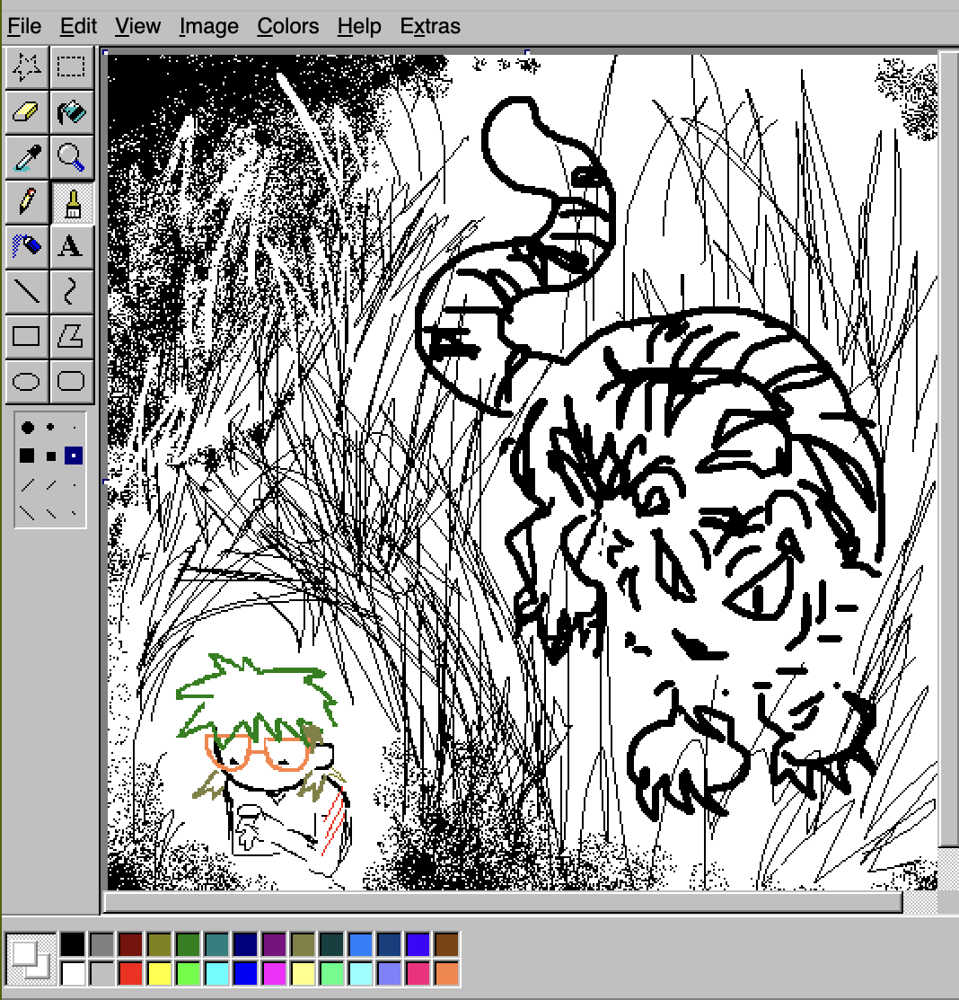

i hold my hands out i hold my hands out and watch the light of the computer screen dance on the mole that appeared on the palm of my hand a few years ago i am holding my hands out
i feel a constant need to be excused
can i learn how to apologize in a real way and not as a kind of begging to feel less naked ? i am holding my hands out i beg that my hunger be less particular, but i cannot again become someone who has not tasted a particular luxury, This is why i was afraid of be coming spoiled, you know, this is why i looked at in the face as one stares down the barrel of a gun i don't know what you are so that is not what scares me, no